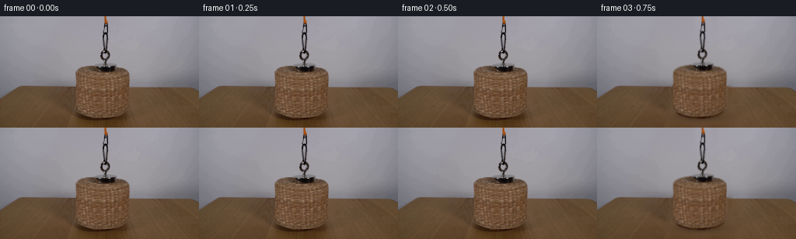
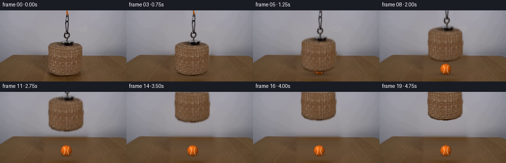
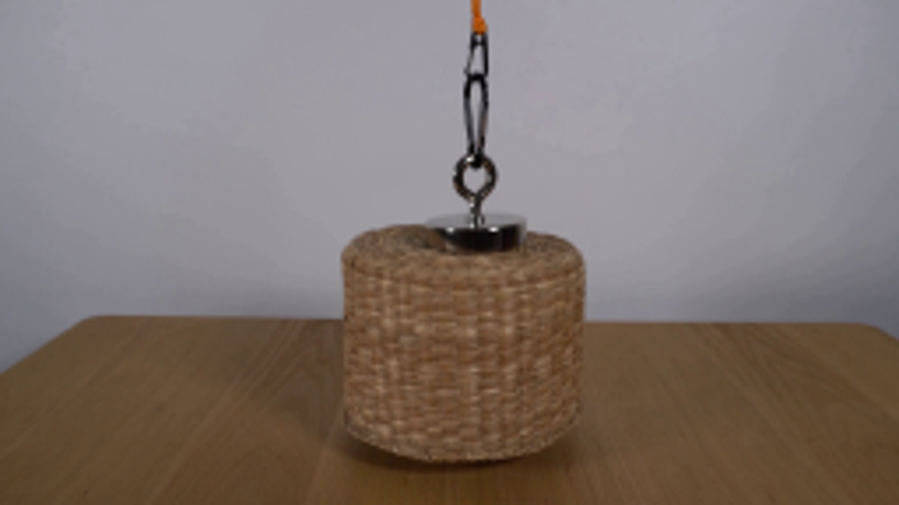
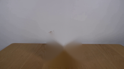
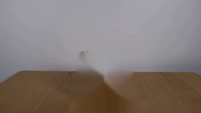
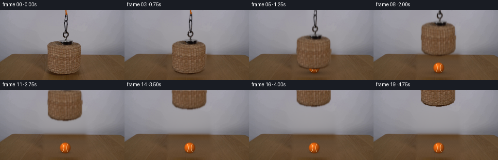

CODING AGENTS AS PIXEL WORLD MODELS
traex/GPT-5.6-Sol · 0170
点击播放 · 原生 RGB 像素
逐轮保存的候选
回放视频、检查图与代码变化。
每份候选均可单独播放。实际图片检查记录在下方工具轨迹中。
候选 01播放与检查图
点击播放 · 原生 RGB 像素

展开代码变化
--- 上一保存版本
+++ 本次保存版本
@@ -0,0 +1,214 @@
+from pathlib import Path
+import cv2
+import numpy as np
+from PIL import Image, ImageDraw, ImageFilter
+import artifact_io
+
+HERE = Path(__file__).resolve().parent
+W, H = 256, 144
+
+
+def soft_mask(mask, radius=0.8):
+ a = Image.fromarray(mask.astype(np.uint8), 'L')
+ if radius:
+ a = a.filter(ImageFilter.GaussianBlur(radius))
+ return np.asarray(a, np.float32) / 255.0
+
+
+def reconstruction_plate(src):
+ """Build the unobstructed locked-off wall and table from the visible surround."""
+ im = src.astype(np.float32)
+ yy, xx = np.mgrid[0:H, 0:W]
+
+ # Smooth photographic wall model. Fit every row to the visible wall on both sides.
+ plate = im.copy()
+ wall = np.zeros_like(im)
+ for y in range(0, 96):
+ xs = np.r_[np.arange(8, 90), np.arange(181, 248)]
+ # keep only wall pixels; at the low rows the side table intrudes
+ if y >= 89:
+ xs = xs[(y < (111 - 0.145*np.abs(xs-128)))]
+ if len(xs) < 15:
+ xs = np.r_[np.arange(20,80), np.arange(190,235)]
+ for c in range(3):
+ co = np.polyfit(xs, im[y, xs, c], 2)
+ wall[y, :, c] = np.polyval(co, np.arange(W))
+ wall = cv2.GaussianBlur(wall, (0,0), 2.2)
+
+ # A tiny deterministic luminance texture prevents the repaired wall from looking painted.
+ rng = np.random.default_rng(170)
+ noise = cv2.GaussianBlur(rng.normal(0, 1, (H,W)).astype(np.float32),(0,0),1.3)
+ wall += noise[...,None]*0.65
+
+ # Table model: row-wise robust fit to visible wood plus converging subtle grain.
+ table = np.zeros_like(im)
+ for y in range(88, H):
+ # usable pixels on either side, avoiding the basket and its cast shadow
+ xs = np.r_[np.arange(4, 83), np.arange(185, 252)]
+ # Only pixels actually below the perspective edge.
+ edge = 91 + np.maximum(0, (92-np.abs(xs-128))*0.0)
+ xs = xs[y >= edge]
+ if len(xs) < 20: xs = np.r_[np.arange(12,75),np.arange(190,245)]
+ for c in range(3):
+ co = np.polyfit(xs, im[y, xs, c], 2)
+ table[y,:,c] = np.polyval(co,np.arange(W))
+ table = cv2.GaussianBlur(table,(0,0),1.2)
+ # Natural fine wood variation, strongest toward the foreground.
+ woodnoise = cv2.GaussianBlur(rng.normal(0,1,(H,W)).astype(np.float32),(0,0),0.65)
+ table += woodnoise[...,None]*np.array([1.5,1.05,.65],np.float32)
+
+ # Render sparse grain rays in a transparent overlay, vanishing at the rear edge.
+ grain = Image.new('RGBA',(W,H),(0,0,0,0)); gd=ImageDraw.Draw(grain)
+ for i, xb in enumerate(range(52,215,9)):
+ xh = 128 + (xb-128)*0.07
+ col = (55,35,18, 10 + (i%3)*3)
+ gd.line([(xh,91),(xb,H+5)], fill=col, width=1)
+ grain_arr=np.asarray(grain,np.float32)
+ ta=np.clip(grain_arr[...,3:4]/255,0,1)
+ table = table*(1-ta)+grain_arr[...,:3]*ta
+
+ # Replacement mask follows the removed setup and old cast shadow, with soft joins.
+ rm = np.zeros((H,W),np.uint8)
+ cv2.ellipse(rm,(132,75),(39,15),0,0,360,255,-1)
+ cv2.rectangle(rm,(94,72),(171,121),255,-1)
+ cv2.ellipse(rm,(132,121),(40,15),0,0,360,255,-1)
+ cv2.ellipse(rm,(132,130),(51,13),0,0,360,255,-1)
+ cv2.rectangle(rm,(116,56),(155,76),255,-1)
+ cv2.rectangle(rm,(126,0),(145,65),255,-1)
+ a=soft_mask(rm,4.0)[...,None]
+ # Exact table/wall boundary in the center is horizontal at y=91 in the source.
+ model = wall.copy()
+ model[91:] = table[91:]
+ # Preserve the crisp back edge with sampled colors.
+ model[90] = wall[90]
+ plate = im*(1-a)+model*a
+ return np.clip(plate,0,255).astype(np.uint8)
+
+
+def object_alpha(src):
+ """Silhouette of basket, magnet, link, carabiner and orange cord."""
+ m=np.zeros((H,W),np.uint8)
+ basket=np.array([[127,63],[147,64],[159,68],[166,73],[168,80],
+ [167,119],[164,125],[153,130],[137,133],[118,132],
+ [104,128],[98,122],[97,78],[99,71],[108,66]],np.int32)
+ cv2.fillPoly(m,[basket],255)
+ # Black disk magnet is a compact solid object.
+ cv2.ellipse(m,(136,67),(18,7),0,0,360,255,-1)
+ cv2.rectangle(m,(119,64),(153,69),255,-1)
+
+ gray=cv2.cvtColor(src,cv2.COLOR_RGB2GRAY)
+ # Isolate dark hardware from the light wall, retaining the open centers of links.
+ roi=np.zeros_like(m); roi[0:65,124:146]=255
+ dark=((gray<132)&(roi>0)).astype(np.uint8)*255
+ dark=cv2.dilate(dark,np.ones((2,2),np.uint8),iterations=1)
+ # connector stem above magnet
+ dark[55:66,132:140]=np.maximum(dark[55:66,132:140],
+ ((gray[55:66,132:140]<155)*255).astype(np.uint8))
+ m=np.maximum(m,dark)
+ # Orange cord at the top, selected by chroma and gently expanded.
+ r,g,b=[src[...,i].astype(np.int16) for i in range(3)]
+ orange=((r>85)&(r>g*1.22)&(g>b*1.05)&(xx_grid()>128)&(xx_grid()<142)&(yy_grid()<18))
+ om=cv2.dilate(orange.astype(np.uint8)*255,np.ones((2,2),np.uint8),1)
+ m=np.maximum(m,om)
+ return soft_mask(m,0.65)
+
+
+def xx_grid(): return np.broadcast_to(np.arange(W)[None,:],(H,W))
+def yy_grid(): return np.broadcast_to(np.arange(H)[:,None],(H,W))
+
+
+def draw_ball(base):
+ """A small orange tennis ball resting where the basket had covered it."""
+ S=4
+ canvas=Image.fromarray(base).resize((W*S,H*S),Image.Resampling.BICUBIC).convert('RGBA')
+ arr=np.asarray(canvas,np.float32).copy()
+ yy,xx=np.mgrid[0:H*S,0:W*S]
+ cx,cy,rad=134*S,119*S,10.8*S
+ d=np.sqrt((xx-cx)**2+(yy-cy)**2)
+ # Contact shadow on wood.
+ sh=np.exp(-(((xx-cx)/(13*S))**2+((yy-(cy+9*S))/(3.0*S))**2)*2.0)*0.27
+ arr[...,:3]*=(1-sh[...,None])
+ # Sphere color with upper-left key light and gentle fuzzy edge.
+ nx=(xx-cx)/rad; ny=(yy-cy)/rad
+ inside=d<=rad
+ nz=np.sqrt(np.maximum(0,1-nx*nx-ny*ny))
+ light=np.clip(nx*(-.34)+ny*(-.43)+nz*.84,0,1)
+ shade=0.47+0.53*light
+ basecol=np.array([235,104,18],np.float32)
+ rgb=basecol[None,None,:]*shade[...,None]
+ # Warm rim and pinpoint diffuse highlight.
+ hi=np.exp(-(((xx-(cx-3.2*S))/(3.3*S))**2+((yy-(cy-4.1*S))/(3.0*S))**2))
+ rgb=rgb*(1-hi[...,None]*.12)+np.array([255,190,80])*hi[...,None]*.22
+ edge=np.clip((rad+1.4*S-d)/(2.0*S),0,1)
+ arr[...,:3]=arr[...,:3]*(1-edge[...,None])+rgb*edge[...,None]
+ # Curved pale tennis seams clipped to sphere.
+ ballim=Image.fromarray(np.clip(arr,0,255).astype(np.uint8),'RGBA')
+ seam=Image.new('RGBA',ballim.size,(0,0,0,0)); sd=ImageDraw.Draw(seam)
+ # two characteristic mirrored arcs
+ box=[(cx-rad*1.28),(cy-rad*.92),(cx+rad*.18),(cy+rad*.92)]
+ sd.arc(box, -67, 68, fill=(255,224,165,205), width=2*S)
+ box2=[(cx-rad*.18),(cy-rad*.92),(cx+rad*1.28),(cy+rad*.92)]
+ sd.arc(box2, 112, 247, fill=(255,224,165,205), width=2*S)
+ # clip seam to ball
+ sa=np.asarray(seam).copy(); sa[...,3]=(sa[...,3].astype(np.float32)*inside).astype(np.uint8)
+ ballim=Image.alpha_composite(ballim,Image.fromarray(sa,'RGBA'))
+ return np.asarray(ballim.convert('RGB').resize((W,H),Image.Resampling.LANCZOS))
+
+
+def translate_layer(rgb, alpha, dx, dy, moving=False):
+ M=np.float32([[1,0,dx],[0,1,dy]])
+ pre=rgb.astype(np.float32)*alpha[...,None]
+ a=cv2.warpAffine(alpha,M,(W,H),flags=cv2.INTER_LINEAR,borderMode=cv2.BORDER_CONSTANT,borderValue=0)
+ p=cv2.warpAffine(pre,M,(W,H),flags=cv2.INTER_LINEAR,borderMode=cv2.BORDER_CONSTANT,borderValue=0)
+ if moving:
+ # restrained real-camera vertical motion blur
+ k=np.array([.10,.18,.44,.18,.10],np.float32)
+ a=cv2.filter2D(a,-1,k[:,None],borderType=cv2.BORDER_CONSTANT)
+ p=cv2.filter2D(p,-1,k[:,None],borderType=cv2.BORDER_CONSTANT)
+ col=np.divide(p,np.maximum(a[...,None],1e-5),out=np.zeros_like(p),where=a[...,None]>1e-5)
+ return np.clip(col,0,255),np.clip(a,0,1)
+
+
+def add_lift_shadow(frame, elevation):
+ # Basket's cast shadow contracts and softens as it rises away from the table.
+ layer=np.zeros((H,W),np.float32)
+ yy,xx=np.mgrid[0:H,0:W]
+ sx=36*(1-elevation)+12*elevation
+ sy=6.8*(1-elevation)+2.5*elevation
+ opacity=.28*(1-elevation)**1.35
+ layer=np.exp(-(((xx-133)/sx)**2+((yy-129)/sy)**2)*1.5)*opacity
+ out=frame.astype(np.float32)
+ out*=1-layer[...,None]
+ return np.clip(out,0,255).astype(np.uint8)
+
+
+def generate():
+ src=np.asarray(Image.open(HERE/'first_frame.png').convert('RGB'),np.uint8)
+ plate=reconstruction_plate(src)
+ stage=draw_ball(plate)
+ alpha=object_alpha(src)
+ frames=[]
+ for i in range(20):
+ if i == 0:
+ frames.append(src.copy())
+ continue
+ # Hold the covered-ball setup briefly, then hoist smoothly and hold at the top.
+ if i <= 2:
+ frames.append(src.copy())
+ continue
+ u=np.clip((i-2)/14.0,0,1)
+ ease=u*u*(3-2*u)
+ dy=-100.0*ease
+ dx=0.8*np.sin(np.pi*u) # near-imperceptible natural lateral settling
+ frame=add_lift_shadow(stage,ease)
+ col,a=translate_layer(src,alpha,dx,dy,moving=(i<17 and abs(dy)>2))
+ out=frame.astype(np.float32)*(1-a[...,None])+col*a[...,None]
+ frames.append(np.clip(out,0,255).astype(np.uint8))
+ return np.stack(frames,axis=0)
+
+
+if __name__=='__main__':
+ frames=generate()
+ assert frames.shape==(20,144,256,3) and frames.dtype==np.uint8
+ assert np.array_equal(frames[0],np.asarray(Image.open(HERE/'first_frame.png').convert('RGB')))
+ artifact_io.save(frames,HERE)
候选 02播放与检查图
点击播放 · 原生 RGB 像素


展开代码变化
--- 上一保存版本
+++ 本次保存版本
@@ -67,15 +67,19 @@
ta=np.clip(grain_arr[...,3:4]/255,0,1)
table = table*(1-ta)+grain_arr[...,:3]*ta
- # Replacement mask follows the removed setup and old cast shadow, with soft joins.
+ # Replacement mask deliberately encloses the removed setup with several pixels
+ # of clean margin. (A mask tracing the wicker too tightly leaves a tell-tale
+ # halo when the basket rises.)
rm = np.zeros((H,W),np.uint8)
- cv2.ellipse(rm,(132,75),(39,15),0,0,360,255,-1)
- cv2.rectangle(rm,(94,72),(171,121),255,-1)
- cv2.ellipse(rm,(132,121),(40,15),0,0,360,255,-1)
- cv2.ellipse(rm,(132,130),(51,13),0,0,360,255,-1)
- cv2.rectangle(rm,(116,56),(155,76),255,-1)
- cv2.rectangle(rm,(126,0),(145,65),255,-1)
- a=soft_mask(rm,4.0)[...,None]
+ cv2.rectangle(rm,(88,55),(177,139),255,-1)
+ cv2.ellipse(rm,(132,55),(45,15),0,0,360,255,-1)
+ cv2.rectangle(rm,(119,0),(151,65),255,-1)
+ # Blur only the outer expansion; force the whole former object footprint to
+ # use the reconstruction plate at full opacity.
+ a=soft_mask(rm,3.0)
+ a[61:137,92:173]=1.0
+ a[0:68,124:147]=1.0
+ a=a[...,None]
# Exact table/wall boundary in the center is horizontal at y=91 in the source.
model = wall.copy()
model[91:] = table[91:]
@@ -141,14 +145,18 @@
rgb=rgb*(1-hi[...,None]*.12)+np.array([255,190,80])*hi[...,None]*.22
edge=np.clip((rad+1.4*S-d)/(2.0*S),0,1)
arr[...,:3]=arr[...,:3]*(1-edge[...,None])+rgb*edge[...,None]
- # Curved pale tennis seams clipped to sphere.
+ # Curved pale tennis seams clipped to sphere. Two narrow parenthesis-like
+ # curves read much more naturally at this tiny scale than a symbolic X.
ballim=Image.fromarray(np.clip(arr,0,255).astype(np.uint8),'RGBA')
seam=Image.new('RGBA',ballim.size,(0,0,0,0)); sd=ImageDraw.Draw(seam)
- # two characteristic mirrored arcs
- box=[(cx-rad*1.28),(cy-rad*.92),(cx+rad*.18),(cy+rad*.92)]
- sd.arc(box, -67, 68, fill=(255,224,165,205), width=2*S)
- box2=[(cx-rad*.18),(cy-rad*.92),(cx+rad*1.28),(cy+rad*.92)]
- sd.arc(box2, 112, 247, fill=(255,224,165,205), width=2*S)
+ left=[]; right=[]
+ for t in np.linspace(-1,1,41):
+ y=cy+t*rad*.78
+ bend=(1-t*t)
+ left.append((cx-rad*.52+rad*.26*bend,y))
+ right.append((cx+rad*.52-rad*.26*bend,y))
+ sd.line(left,fill=(255,225,171,190),width=S,joint='curve')
+ sd.line(right,fill=(255,225,171,190),width=S,joint='curve')
# clip seam to ball
sa=np.asarray(seam).copy(); sa[...,3]=(sa[...,3].astype(np.float32)*inside).astype(np.uint8)
ballim=Image.alpha_composite(ballim,Image.fromarray(sa,'RGBA'))
候选 03播放与检查图

候选 04播放与检查图
点击播放 · 原生 RGB 像素

展开代码变化
--- 上一保存版本
+++ 本次保存版本
@@ -206,7 +206,9 @@
continue
u=np.clip((i-2)/14.0,0,1)
ease=u*u*(3-2*u)
- dy=-100.0*ease
+ # Final position is against the top edge while the recognizable lower
+ # portion of the basket remains in-frame (rather than vanishing entirely).
+ dy=-76.0*ease
dx=0.8*np.sin(np.pi*u) # near-imperceptible natural lateral settling
frame=add_lift_shadow(stage,ease)
col,a=translate_layer(src,alpha,dx,dy,moving=(i<17 and abs(dy)>2))
可观测工具轨迹
实际执行的命令与返回图片。
命令 1exit 0
/bin/bash -lc "cat prompt.txt && printf '\\n---RULES---\\n' && cat GENERATION_RULES.md"
命令 2exit 1
/bin/bash -lc "find . -maxdepth 2 -type f -printf '%p\\n' | sort && printf '\\n---BINARIES---\\n' && command -v ffmpeg && command -v python3"
命令 3exit 0
/bin/bash -lc "python3 - <<'PY' mods=['cv2','PIL','numpy','scipy','skimage','imageio'] for m in mods: try: x=__import__(m); print(m, getattr(x,'__version__','ok')) except Exception as e: print(m,'NO',e) PY"
命令 4exit 0
/bin/bash -lc "python3 - <<'PY'
from PIL import Image
im=Image.open('first_frame.png'); print(im.mode, im.size)
PY
ls -l artifact_io.py && sed -n '1,240p' artifact_io.py"命令 5exit 0
/bin/bash -lc "python3 - <<'PY'
from PIL import Image
im=Image.open('first_frame.png')
im.resize((1024,576)).save('.tmp/enlarged.png')
PY"命令 6exit 0
/bin/bash -lc "cat > .tmp/test_plate.py <<'PY'
import cv2, numpy as np
from PIL import Image
im=cv2.imread('first_frame.png')
mask=np.zeros(im.shape[:2],np.uint8)
# basket shadow/object broad
cv2.ellipse(mask,(132,76),(38,14),0,0,360,255,-1)
cv2.rectangle(mask,(95,73),(169,122),255,-1)
cv2.ellipse(mask,(132,121),(38,14),0,0,360,255,-1)
# shadow
cv2.ellipse(mask,(132,127),(46,13),0,0,360,255,-1)
# hardware
cv2.rectangle(mask,(119,59),(153,76),255,-1)
cv2.rectangle(mask,(127,0),(143,65),255,-1)
# inpaint
for method,name in [(cv2.INPAINT_TELEA,'telea'),(cv2.INPAINT_NS,'ns')]:
out=cv2.inpaint(im,mask,7,method)
cv2.imwrite('.tmp/'+name+'.png',out)
PY
python3 .tmp/test_plate.py"命令 7exit 0
/bin/bash -lc "cat > generate.py <<'PY'
from pathlib import Path
import cv2
import numpy as np
from PIL import Image, ImageDraw, ImageFilter
import artifact_io
HERE = Path(__file__).resolve().parent
W, H = 256, 144
def soft_mask(mask, radius=0.8):
a = Image.fromarray(mask.astype(np.uint8), 'L')
if radius:
a = a.filter(ImageFilter.GaussianBlur(radius))
return np.asarray(a, np.float32) / 255.0
def reconstruction_plate(src):
\"\"\"Build the unobstructed locked-off wall and table from the visible surround.\"\"\"
im = src.astype(np.float32)
yy, xx = np.mgrid[0:H, 0:W]
# Smooth photographic wall model. Fit every row to the visible wall on both sides.
plate = im.copy()
wall = np.zeros_like(im)
for y in range(0, 96):
xs = np.r_[np.arange(8, 90), np.arange(181, 248)]
# keep only wall pixels; at the low rows the side table intrudes
if y >= 89:
xs = xs[(y < (111 - 0.145*np.abs(xs-128)))]
if len(xs) < 15:
xs = np.r_[np.arange(20,80), np.arange(190,235)]
for c in range(3):
co = np.polyfit(xs, im[y, xs, c], 2)
wall[y, :, c] = np.polyval(co, np.arange(W))
wall = cv2.GaussianBlur(wall, (0,0), 2.2)
# A tiny deterministic luminance texture prevents the repaired wall from looking painted.
rng = np.random.default_rng(170)
noise = cv2.GaussianBlur(rng.normal(0, 1, (H,W)).astype(np.float32),(0,0),1.3)
wall += noise[...,None]*0.65
# Table model: row-wise robust fit to visible wood plus converging subtle grain.
table = np.zeros_like(im)
for y in range(88, H):
# usable pixels on either side, avoiding the basket and its cast shadow
xs = np.r_[np.arange(4, 83), np.arange(185, 252)]
# Only pixels actually below the perspective edge.
edge = 91 + np.maximum(0, (92-np.abs(xs-128))*0.0)
xs = xs[y >= edge]
if len(xs) < 20: xs = np.r_[np.arange(12,75),np.arange(190,245)]
for c in range(3):
co = np.polyfit(xs, im[y, xs, c], 2)
table[y,:,c] = np.polyval(co,np.arange(W))
table = cv2.GaussianBlur(table,(0,0),1.2)
# Natural fine wood variation, strongest toward the foreground.
woodnoise = cv2.GaussianBlur(rng.normal(0,1,(H,W)).astype(np.float32),(0,0),0.65)
table += woodnoise[...,None]*np.array([1.5,1.05,.65],np.float32)
# Render sparse grain rays in a transparent overlay, vanishing at the rear edge.
grain = Image.new('RGBA',(W,H),(0,0,0,0)); gd=ImageDraw.Draw(grain)
for i, xb in enumerate(range(52,215,9)):
xh = 128 + (xb-128)*0.07
col = (55,35,18, 10 + (i%3)*3)
gd.line([(xh,91),(xb,H+5)], fill=col, width=1)
grain_arr=np.asarray(grain,np.float32)
ta=np.clip(grain_arr[...,3:4]/255,0,1)
table = table*(1-ta)+grain_arr[...,:3]*ta
# Replacement mask follows the removed setup and old cast shadow, with soft joins.
rm = np.zeros((H,W),np.uint8)
cv2.ellipse(rm,(132,75),(39,15),0,0,360,255,-1)
cv2.rectangle(rm,(94,72),(171,121),255,-1)
cv2.ellipse(rm,(132,121),(40,15),0,0,360,255,-1)
cv2.ellipse(rm,(132,130),(51,13),0,0,360,255,-1)
cv2.rectangle(rm,(116,56),(155,76),255,-1)
cv2.rectangle(rm,(126,0),(145,65),255,-1)
a=soft_mask(rm,4.0)[...,None]
# Exact table/wall boundary in the center is horizontal at y=91 in the source.
model = wall.copy()
model[91:] = table[91:]
# Preserve the crisp back edge with sampled colors.
model[90] = wall[90]
plate = im*(1-a)+model*a
return np.clip(plate,0,255).astype(np.uint8)
def object_alpha(src):
\"\"\"Silhouette of basket, magnet, link, carabiner and orange cord.\"\"\"
m=np.zeros((H,W),np.uint8)
basket=np.array([[127,63],[147,64],[159,68],[166,73],[168,80],
[167,119],[164,125],[153,130],[137,133],[118,132],
[104,128],[98,122],[97,78],[99,71],[108,66]],np.int32)
cv2.fillPoly(m,[basket],255)
# Black disk magnet is a compact solid object.
cv2.ellipse(m,(136,67),(18,7),0,0,360,255,-1)
cv2.rectangle(m,(119,64),(153,69),255,-1)
gray=cv2.cvtColor(src,cv2.COLOR_RGB2GRAY)
# Isolate dark hardware from the light wall, retaining the open centers of links.
roi=np.zeros_like(m); roi[0:65,124:146]=255
dark=((gray<132)&(roi>0)).astype(np.uint8)*255
dark=cv2.dilate(dark,np.ones((2,2),np.uint8),iterations=1)
# connector stem above magnet
dark[55:66,132:140]=np.maximum(dark[55:66,132:140],
((gray[55:66,132:140]<155)*255).astype(np.uint8))
m=np.maximum(m,dark)
# Orange cord at the top, selected by chroma and gently expanded.
r,g,b=[src[...,i].astype(np.int16) for i in range(3)]
orange=((r>85)&(r>g*1.22)&(g>b*1.05)&(xx_grid()>128)&(xx_grid()<142)&(yy_grid()<18))
om=cv2.dilate(orange.astype(np.uint8)*255,np.ones((2,2),np.uint8),1)
m=np.maximum(m,om)
return soft_mask(m,0.65)
def xx_grid(): return np.broadcast_to(np.arange(W)[None,:],(H,W))
def yy_grid(): return np.broadcast_to(np.arange(H)[:,None],(H,W))
def draw_ball(base):
\"\"\"A small orange tennis ball resting where the basket had covered it.\"\"\"
S=4
canvas=Image.fromarray(base).resize((W*S,H*S),Image.Resampling.BICUBIC).convert('RGBA')
arr=np.asarray(canvas,np.float32).copy()
yy,xx=np.mgrid[0:H*S,0:W*S]
cx,cy,rad=134*S,119*S,10.8*S
d=np.sqrt((xx-cx)**2+(yy-cy)**2)
# Contact shadow on wood.
sh=np.exp(-(((xx-cx)/(13*S))**2+((yy-(cy+9*S))/(3.0*S))**2)*2.0)*0.27
arr[...,:3]*=(1-sh[...,None])
# Sphere color with upper-left key light and gentle fuzzy edge.
nx=(xx-cx)/rad; ny=(yy-cy)/rad
inside=d<=rad
nz=np.sqrt(np.maximum(0,1-nx*nx-ny*ny))
light=np.clip(nx*(-.34)+ny*(-.43)+nz*.84,0,1)
shade=0.47+0.53*light
basecol=np.array([235,104,18],np.float32)
rgb=basecol[None,None,:]*shade[...,None]
# Warm rim and pinpoint diffuse highlight.
hi=np.exp(-(((xx-(cx-3.2*S))/(3.3*S))**2+((yy-(cy-4.1*S))/(3.0*S))**2))
rgb=rgb*(1-hi[...,None]*.12)+np.array([255,190,80])*hi[...,None]*.22
edge=np.clip((rad+1.4*S-d)/(2.0*S),0,1)
arr[...,:3]=arr[...,:3]*(1-edge[...,None])+rgb*edge[...,None]
# Curved pale tennis seams clipped to sphere.
ballim=Image.fromarray(np.clip(arr,0,255).astype(np.uint8),'RGBA')
seam=Image.new('RGBA',ballim.size,(0,0,0,0)); sd=ImageDraw.Draw(seam)
# two characteristic mirrored arcs
box=[(cx-rad*1.28),(cy-rad*.92),(cx+rad*.18),(cy+rad*.92)]
sd.arc(box, -67, 68, fill=(255,224,165,205), width=2*S)
box2=[(cx-rad*.18),(cy-rad*.92),(cx+rad*1.28),(cy+rad*.92)]
sd.arc(box2, 112, 247, fill=(255,224,165,205), width=2*S)
# clip seam to ball
sa=np.asarray(seam).copy(); sa[...,3]=(sa[...,3].astype(np.float32)*inside).astype(np.uint8)
ballim=Image.alpha_composite(ballim,Image.fromarray(sa,'RGBA'))
return np.asarray(ballim.convert('RGB').resize((W,H),Image.Resampling.LANCZOS))
def translate_layer(rgb, alpha, dx, dy, moving=False):
M=np.float32([[1,0,dx],[0,1,dy]])
pre=rgb.astype(np.float32)*alpha[...,None]
a=cv2.warpAffine(alpha,M,(W,H),flags=cv2.INTER_LINEAR,borderMode=cv2.BORDER_CONSTANT,borderValue=0)
p=cv2.warpAffine(pre,M,(W,H),flags=cv2.INTER_LINEAR,borderMode=cv2.BORDER_CONSTANT,borderValue=0)
if moving:
# restrained real-camera vertical motion blur
k=np.array([.10,.18,.44,.18,.10],np.float32)
a=cv2.filter2D(a,-1,k[:,None],borderType=cv2.BORDER_CONSTANT)
p=cv2.filter2D(p,-1,k[:,None],borderType=cv2.BORDER_CONSTANT)
col=np.divide(p,np.maximum(a[...,None],1e-5),out=np.zeros_like(p),where=a[...,None]>1e-5)
return np.clip(col,0,255),np.clip(a,0,1)
def add_lift_shadow(frame, elevation):
# Basket's cast shadow contracts and softens as it rises away from the table.
layer=np.zeros((H,W),np.float32)
yy,xx=np.mgrid[0:H,0:W]
sx=36*(1-elevation)+12*elevation
sy=6.8*(1-elevation)+2.5*elevation
opacity=.28*(1-elevation)**1.35
layer=np.exp(-(((xx-133)/sx)**2+((yy-129)/sy)**2)*1.5)*opacity
out=frame.astype(np.float32)
out*=1-layer[...,None]
return np.clip(out,0,255).astype(np.uint8)
def generate():
src=np.asarray(Image.open(HERE/'first_frame.png').convert('RGB'),np.uint8)
plate=reconstruction_plate(src)
stage=draw_ball(plate)
alpha=object_alpha(src)
frames=[]
for i in range(20):
if i == 0:
frames.append(src.copy())
continue
# Hold the covered-ball setup briefly, then hoist smoothly and hold at the top.
if i <= 2:
frames.append(src.copy())
continue
u=np.clip((i-2)/14.0,0,1)
ease=u*u*(3-2*u)
dy=-100.0*ease
dx=0.8*np.sin(np.pi*u) # near-imperceptible natural lateral settling
frame=add_lift_shadow(stage,ease)
col,a=translate_layer(src,alpha,dx,dy,moving=(i<17 and abs(dy)>2))
out=frame.astype(np.float32)*(1-a[...,None])+col*a[...,None]
frames.append(np.clip(out,0,255).astype(np.uint8))
return np.stack(frames,axis=0)
if __name__=='__main__':
frames=generate()
assert frames.shape==(20,144,256,3) and frames.dtype==np.uint8
assert np.array_equal(frames[0],np.asarray(Image.open(HERE/'first_frame.png').convert('RGB')))
artifact_io.save(frames,HERE)
PY
python3 generate.py"命令 8exit 0
/bin/bash -lc 'python3 generate.py'
命令 9exit 0
/bin/bash -lc "python3 generate.py >/dev/null && python3 - <<'PY'
import numpy as np
from PIL import Image
z=np.load('pixels.npz')['pixels']
first=np.asarray(Image.open('first_frame.png').convert('RGB'),np.uint32)
p=(first[...,0]<<16)|(first[...,1]<<8)|first[...,2]
print('pixels',z.shape,z.dtype,'first_equal',np.array_equal(z[:,:,0],p))
fs=[]
for i in range(20):
a=np.asarray(Image.open(f'frames/{i:02d}.png'))
fs.append(a)
a=np.stack(fs)
print('frames',a.shape,a.dtype,'unique transitions',[int(np.count_nonzero(a[i]"'!=a[i-1])) for i in range(1,20)])
PY'视觉工具实际返回图片 1

视觉工具实际返回图片 2

视觉工具实际返回图片 3

视觉工具实际返回图片 4
视觉工具实际返回图片 5

视觉工具实际返回图片 6

保存候选 4 份；完成命令 9 次；可验证图片返回 6 张。原始 API 响应与完整日志保留在本地。